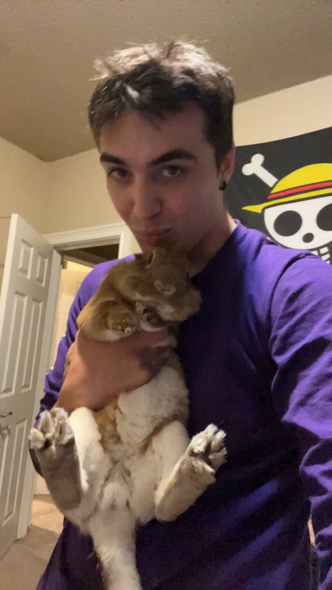

My favorite hobby of mine is track riding. More specifically on sport motorcycles. My favorite track is Sonoma Raceway, and I try to go to as many track days as I can and have time for. I ride a 2008 Yamaha R6 which is modified by me for racing. I am not the fastest on the track, but it is my dream to get faster, and I practice almost every single day. The races I participate in are not televised, and wouldn't really be characterized as races, but the goal is to improve your lap times and get better so maybe one day you can race in front of a television audience. I do love me some adrenaline, and that is why I love to ride sport bikes so much. You can see my gear and bike in the attached images.

Pets
The cute little bunny in the images is my bunny. He is the cutest thing ever and I love him so much. His name is BunBun, and he is a Rex/Lionhead bunny. He is a male and is about a year and a half old at the time of the creation of this website.